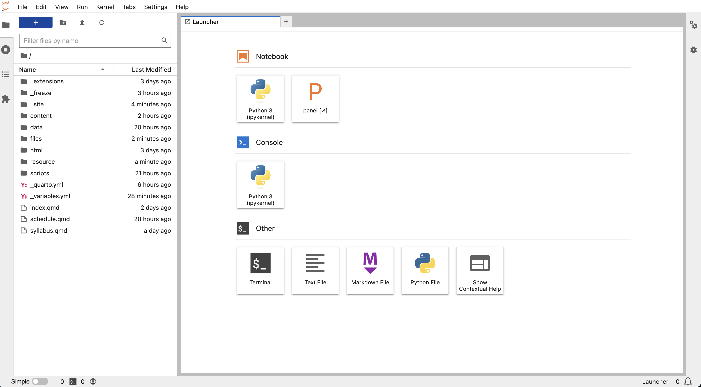
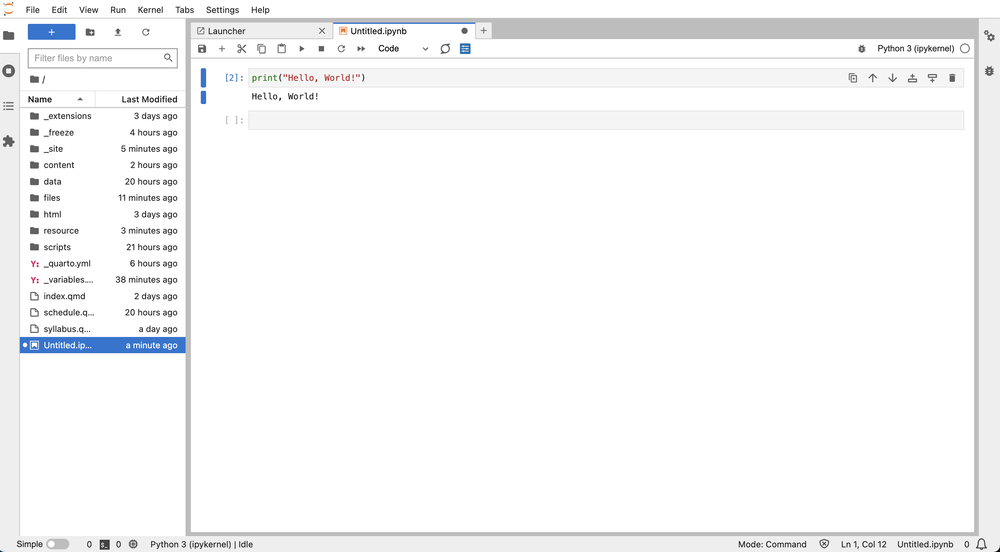

Installing Python and inital set-up
MUSA 550 relies on freely available software from the Python open-source ecosystem. This guide will walk you through how to set up your computer for the course, including downloading and installing Python as well as the various packages you will need throughout the semester.
By the end of this guide, you’ll have Python installed, be able to launch a Jupyter notebook (the interface for running Python code), and will be writing your first Python code. Let’s get started!
Step 1. Installing Python
There are a number of different tools and ways to install Python for new users. In this course, we’ll be using a package manager called mamba to install Python and manage dependencies. In the Python ecosystem, package managers are especially useful, as they greatly simplify the installation process and ensure all of your dependencies will function properly.
mamba is a drop-in replacement (meaning it has the same functionality) for a very popular Python package manager called conda. We’ll use mamba instead of conda because it has signficiantly better performance. In my experience, it’s not uncommon for it to sometimes take more than hour to install a list of Python packages with conda but only a few seconds for mamba to do the same.
Anything you can do with the conda tool, you can do with the mamba tool. Outside this class, you’ll likely hear about conda more often, since it’s the more popular tool at the moment.
As you will see later, we will often refer to the conda documentation to learn about the key concepts behind conda/mamba and its main functionality.
The mamba tool allows you to easily install Python packages on your laptop using environments. An environment allows you to install packages for specific purposes and keep those packages isolated from any other Python packages that might be installed on your laptop. This is very useful, since different versions of packages often don’t work nicely together. We will create an environment for use during this class that includes all of the Python packages you will need in the course.
In this course, we will use the “mambaforge” distribution of Python, which includes Python, mamba, and a few other essential packages and dependencies. It also comes pre-configured with “conda-forge”, a popular, community-maintained server that makes the most popular Python packages available for download for free.
The mambaforge distribution is the mamba version of the popular “Miniconda” distribution, which is a free, minimal Python installation that just includes conda. Miniconda is a lightweight version of the full Anaconda distribution. The differences between the “mini” and “full” versions are outlined here.
The major difference is that the Anaconda distribution will install more than 1,500 of the most common scientific Python packages (many more than we need in this course) and will take up about 3 GB of disk space. Mambaforge/Miniconda will only install core Python dependencies (as well as mamba/conda) and will only take up a much smaller amount of disk space.
The following page contains the installation files for the mambaforge distribution:
https://github.com/conda-forge/miniforge#mambaforge
Select the appropriate file for your computer’s operating system and click to download the file. The file should be named something like Mambaforge-Linux-*, Mambaforge-MacOSX-*, or Mambaforge-Windows-*.
The rest of the installation instructions will vary based on your operating system:
Windows
- In the file browser, double-click the
.exefile that you downloaded. - Follow the instructions on the screen. If you are unsure about any setting, accept the defaults. You can change them later.
MacOS
Open the Terminal application.
Change to the folder to the directory where the
.shinstaller file was downloaded (this is usually the “Downloads” folder) by running the following command in the Terminal app:bash Mambaforge-MacOSX-x86_64.shor if you have a Mac with the new M2 chips, use:
bash Mambaforge-MacOSX-arm64.shFollow the instructions on the screen. If you are asked about if you “wish the installer to initialize Mambaforge by running conda init?”, type “yes”. This will ensure that
mambais an available command when you open up Terminal.If you are unsure about any setting, accept the defaults. You can change them later.
To make the changes take effect, close and then re-open your terminal window.
2. Verify that your Python installation is working
To verify that the install worked, we will run mamba from the command line. The specifics of this will depend on your operating system:
Windows
Open the Start menu, search for and open the “Miniforge Prompt”. This application provides a command line interface where the mamba tool is properly loaded, initialized, and ready to be used.
Note that you cannot use the default “Command Prompt” application to use mamba because it doesn’t know how to load mamba properly.
MacOS
The Terminal app should be used on MacOS to use mamba. You can also use any Terminal emulator (such as iTerm2). Simply open the Terminal application and the mamb command should be ready to use.
Now, let’s test your installation. From the command line, run: mamba list. A list of installed packages should be printed to the screen if the installation was successful.
After you’ve sucessfully installed the mambaforge distribution, you will have Python 3.10 installed with a default environment called “base”.
3. Create your first Python environment
The mamba/conda tool allows us to easily install new Python packages and keep track of which ones we’ve already installed. I’ve put together a list of the packages we’ll need in this course (a group of packages is known as an environment in mamba-speak). Note that you’ll be using the command line (either the Miniforge Prompt in Windows or Terminal app in MacOS) to run mamba and create your environment.
Throughout this course, we will maintain an environment called “musa-550-fall-2023” to install and manage all of the packages needed throughout the semester.
The packages in an environment are specified in a file typically called “environment.yml”. The environment file for this course is stored in the course-materials repository on Github and a copy is also stored in the cloud on anaconda.org.
It is recommended to create the ‘musa-550-fall-2023’ environment on your local computer using the environment file stored in the cloud on anaconda.org. The instructions to do so are as follows:
First, we need to make sure the anaconda-client package is installed locally. This will ensure that mamba can interface with anaconda.org. From the command line (Miniforge Prompt on Windows or Terminal on MacOS), run:
mamba install anaconda-client -n baseThis will install the anaconda-client package into the default “base” environment.
Then, create the musa-550-fall-2023 environment by running:
mamba env create pennmusa/musa-550-fall-2023After this command finishes, all of the packages we need for the course should be installed. To verify this, you can run mamba env list from the command line to see the installed environments. If everything worked, you should now see the 'musa-550-fall-2023' environment listed.
This semester, we will be using Python version 3.10. More information about the different versions of Python is available here.
4. Activate the course’s environment
Once you’ve created your new environment and installed the Python packages for the course, you need to tell mamba to activate it (more mamba-speak) so that you can actually use the packages when you are writing Python code.
To activate the environment for this course, you can run the following from the command line (Miniforge Prompt on Windows or Terminal on MacOS):
mamba activate musa-550-fall-2023Now, all of the packages in this environment will be available when we run Python.
If you forget to activate the course’s environment, you will be using the default “base” environment. This has some of the packages we will need, but many will be missing. If you are trying to import Python packages and get a “ModuleNotFoundError” error, the active environoment is likely the issue!
5. Launching a Jupyter notebook
Throughout the course, we will write, edit, and execute Python code in files called Jupyter notebooks. These files have an .ipynb extension. Notebooks are documents that combine live runnable code with narrative text, images, and interactive visualizations.
An application called JupyterLab is the recommended way to work with these notebook files. JupyterLab is a browser-based interface that allows users to execute Python in notebook files. It can also handle all sorts of additional file formats and even has a built-in command-line feature. The JupyterLab guide provides much more information about the features of JupyterLab — for the moment, we will just focus on launching our first notebook file.
There are other interfaces for working with Jupyter notebooks. The original Jupyter notebook application has since been replaced by the more powerful JupyterLab application. Popular code editors such as VS Code have also added support for Jupyter notebooks, although it is important to note that VS Code does not support all features of notebooks. For this reason, JupyterLab remains the recommended notebook interface.
The recommended approach for starting a notebook is to use the Miniforge Prompt on Windows or the Terminal app on MacOS. To do so, we simply need to activate our 'musa-550-fall-2023' environment and then start JupyterLab, which is included in the course’s environment.
From the command line, first activate the environment:
mamba activate musa-550-fall-2023and then launch JupyterLab
jupyter labThis will create the local Jupyter server and should launch the JupyterLab dashboard in a browser. If it does not open in a browser, copy the link that is output by the command into your favorite browser. Typically, the server will be running at http://localhost:8888. The dashboard should like look something like this:

On the left, you’ll see a file browser for the files in the folder where you ran the jupyter lab command. On the right you will see the “Launcher”, which allows you to easily create various types of new files. Click on the “Python 3” button under the “Notebook” section and you’ll create your first notebook. Alternatively, you can use the File -> New -> Notebook option from the menu bar. The new notebook, entitled “Untitled.ipynb”, is created within the same directory.
Now, let’s type the following into the first cell:
print("Hello, World!")Click the ⏵ button in the menu bar of the notebook and you will run your first Python code in a notebook!

The Jupyter notebook section of the JupyterLab walks you through each step of working with notebook files in JupyterLab. Check it out here, or find more information in the JupyterLab guide.